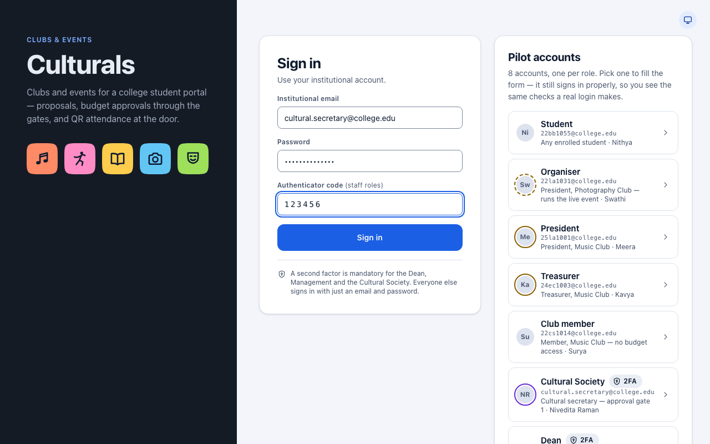
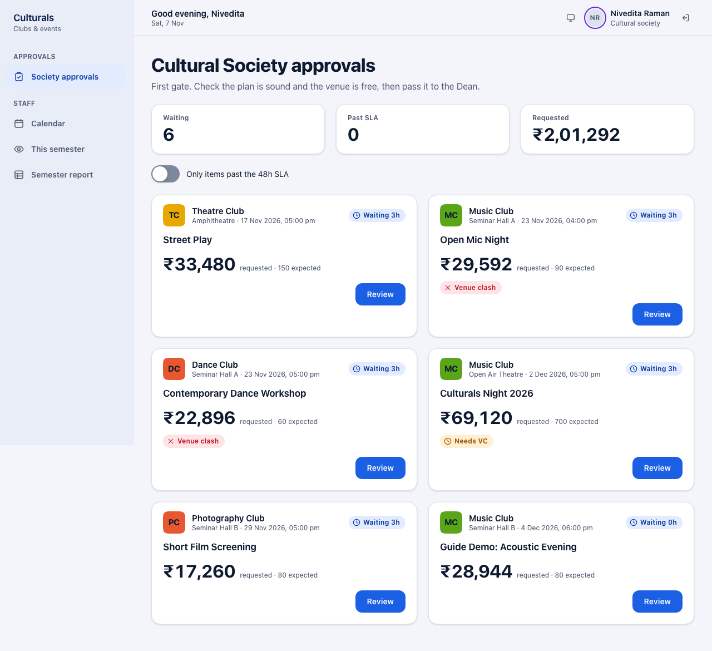
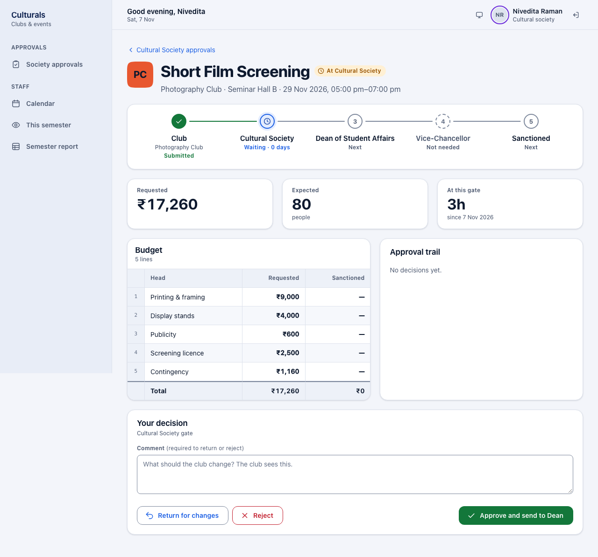
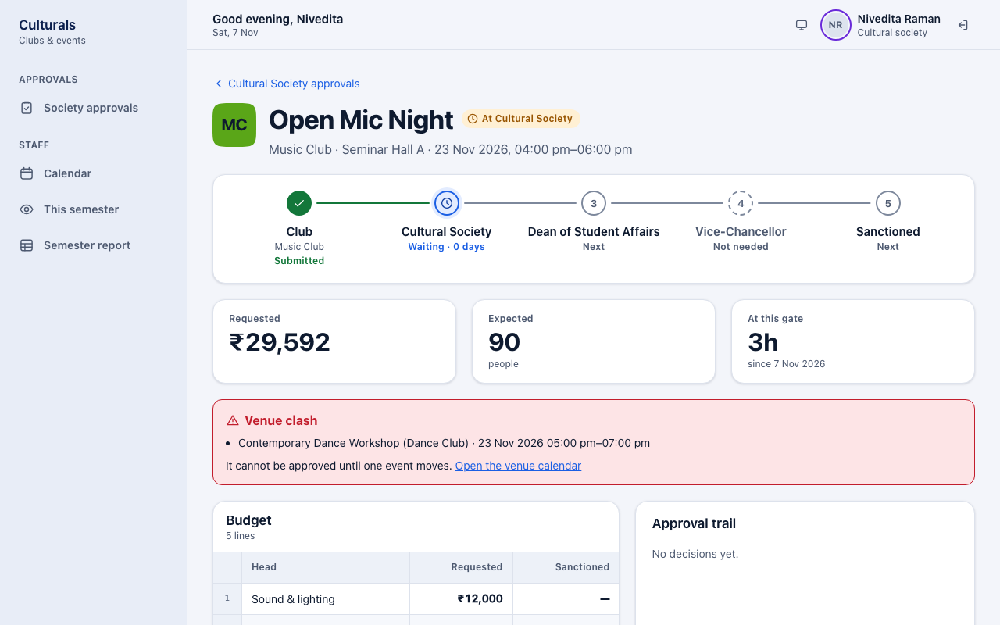
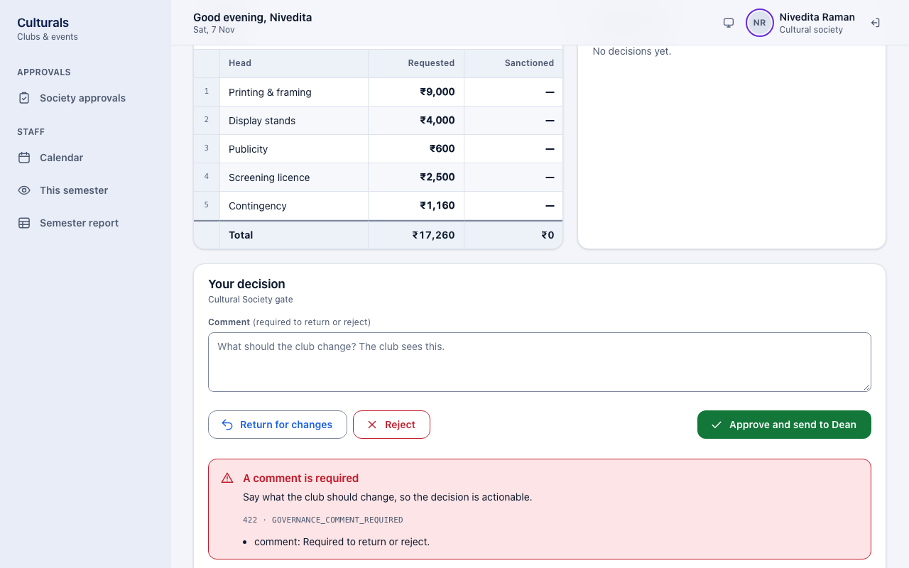
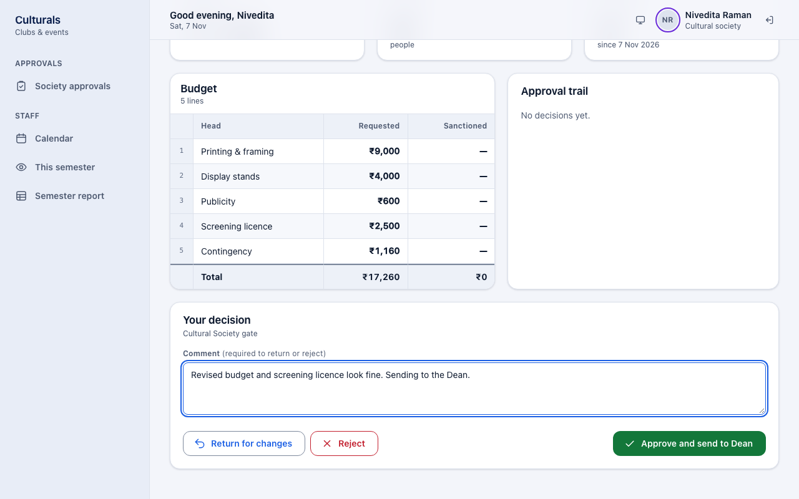
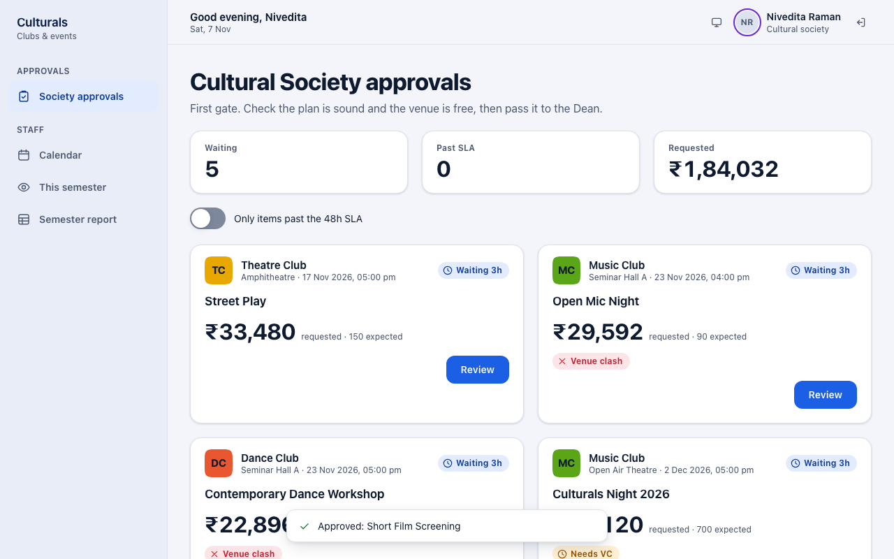
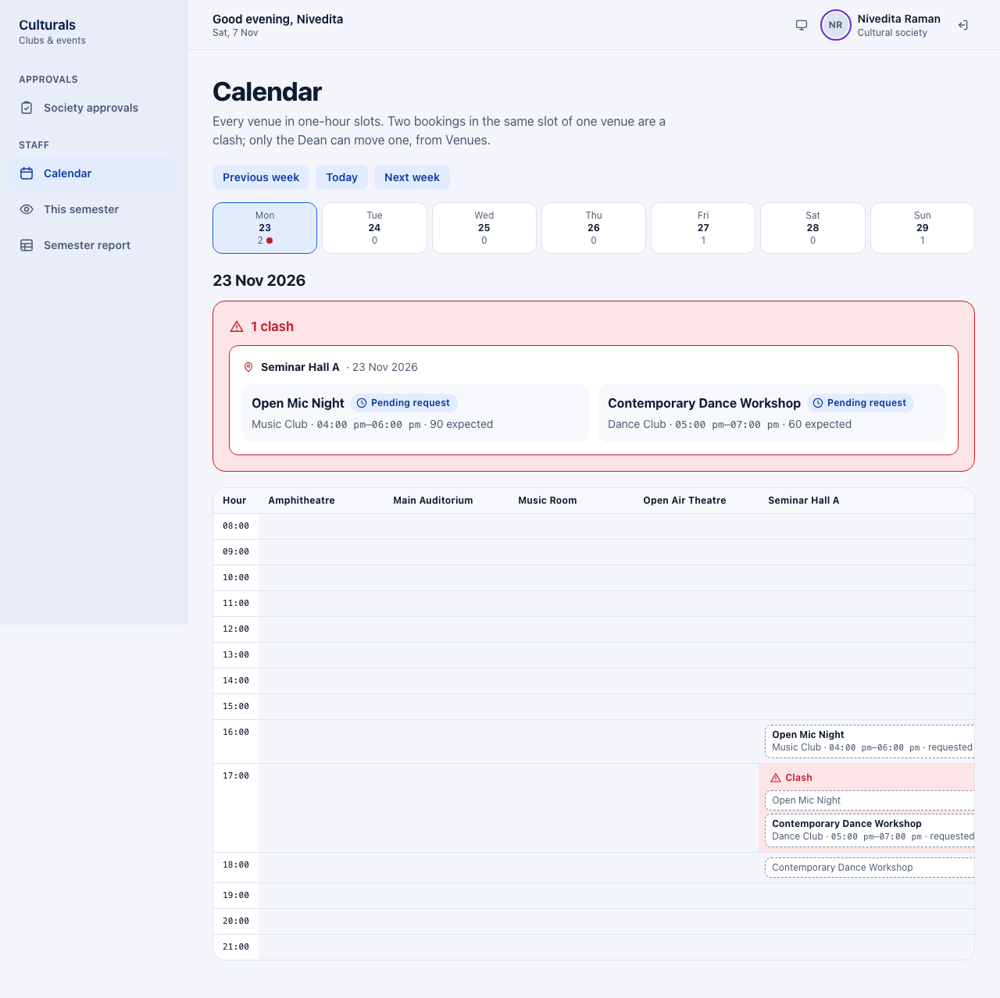
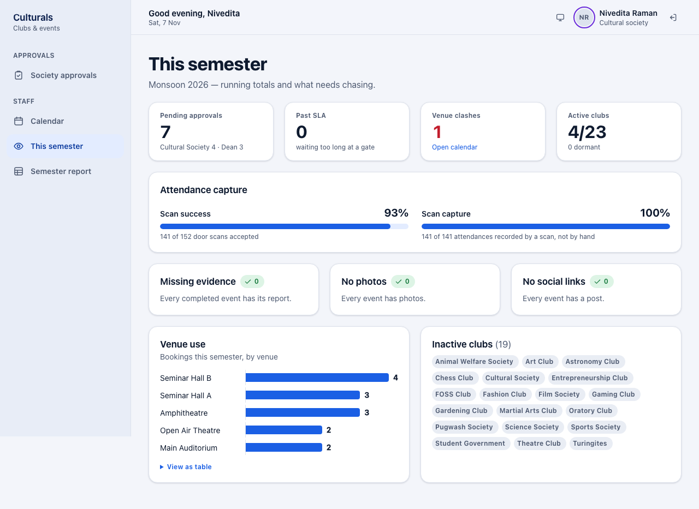
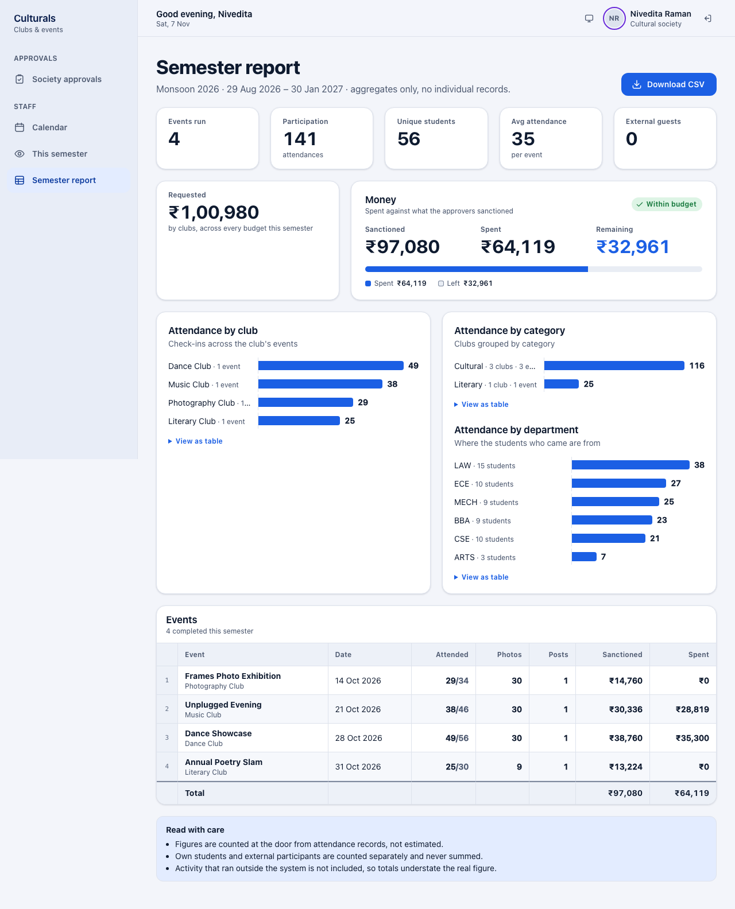

Cultural Society guide
This chapter is for the Cultural Society secretary. You review event proposals from the cultural and literary clubs before they go to the Dean. You can pass a proposal on to the Dean, send it back to the club for changes, or reject it. You can also see the events calendar, the semester overview and the semester report.
How a proposal moves
A club's proposal goes to the Cultural Society (cultural and literary clubs only), then the Dean (always), then the Vice-Chancellor (only above ₹50,000 or for a fest), and is then published. A proposal that is returned or rejected at any gate goes back to the club. See the approval flow for the diagram.
Signing in
Staff accounts need a second step at sign-in.
- Open the sign-in page and enter your Institutional email and Password.
- Click I have an authenticator code and type the 6-digit code from your authenticator app.
- Click Sign in.

Why the code? Approvers commit the college's money, so a stolen password alone must not be enough to approve anything. The Cultural Society, Dean, Vice-Chancellor and administrators cannot sign in without the code. Every decision you make is marked MFA in the approval trail, so anyone can later see it was made by a verified approver.
What you see after signing in
You start on Society approvals. The side menu has:
- Society approvals: proposals waiting at your gate.
- Calendar: every venue booking, hour by hour.
- This semester: running totals and things to chase up.
- Semester report: attendance and money for the semester.

The three figures at the top show how many proposals are Waiting, how many are Past SLA (waiting more than 48 hours at your gate) and the total amount Requested. Turn on Only items past the 48h SLA to see only the late ones.
Each card shows the club, venue, date and time, how long it has been waiting, the amount requested and the expected crowd. Tags warn you about:
- Venue clash: another event is booked in the same venue at the same time.
- Needs VC: it will also need the Vice-Chancellor's approval.
- Nil budget: the club declared it needs no money.
Review a proposal
- On a card, click Review (or the event title).
- Check the page from top to bottom: - The route shows which gates this proposal must pass. A gate marked Not needed is skipped (for example the Vice-Chancellor for a small budget). - Requested, Expected (people) and At this gate (how long it has waited). - Budget: each line the club asked for. The Sanctioned column fills in once the Dean decides. - Approval trail: every decision so far, who made it, when, and their comment.
A resubmitted proposal
When an approver returns a proposal, the club edits it and sends it again. It then starts again from the first gate, so it comes back to you even if you approved it the first time.
In the demo data, Short Film Screening (Photography Club) was approved by the Society, then returned by the Dean with the comment "Publicity looks high for an 80-seat screening, and the screening licence is missing". The club lowered Publicity to ₹600, added a Screening licence line of ₹2,500 and resubmitted. It is back in your queue:

The resubmitted proposal starts with a fresh approval trail (No decisions yet.). The Dean's earlier comment is not shown here, so check the revised budget against what you know the Dean asked for. The Dean guide shows how the returned version looks.
When there is a venue clash
If the proposal overlaps another booking in the same venue, a red Venue clash box lists the other event.

A clashing proposal cannot be approved at any gate until one of the events moves. Only the Dean can move an event to another venue. You can see the clash on the Calendar, and you can still return the proposal and ask the club to pick another venue or time.
Approve, return or reject
The Your decision panel is at the bottom of the proposal.
- Approve and send to Dean: the proposal moves to the Dean's queue. A comment is optional.
- Return for changes: the proposal goes back to the club, which can edit and resubmit it.
- Reject: the proposal is closed. This is final.
The club sees your comment, and the club's office bearers are notified when you return or reject.
- Type a comment in Comment. It is required to return or reject. If you leave it empty, the app refuses and asks for one:

- Click the button for your decision. Here the secretary approves the resubmitted Short Film Screening with a note:

- You return to the queue with a confirmation at the bottom of the screen (for example Approved: Short Film Screening), and the proposal leaves your queue.

A decision cannot be undone from this screen. If you approve by mistake, ask the Dean to return it.
Calendar
Calendar shows every venue booking, one week at a time.
- Use Previous week, Today and Next week to change the week.
- Each day in the week strip shows how many bookings it has. A red dot marks a day with a clash. Click a day to open it.
- The day opens as a grid: venues across the top, one row per hour. A booking with a solid outline is approved; a dashed one marked requested is still going through approval.
- If two bookings share a slot in one venue, the slot turns red and says Clash, and the clashing pair is listed above the grid.

Bookings are in whole hours. The calendar is read-only: only the Dean can move an event, from the Venues page. If the grid is wider than the screen, scroll it sideways to see the other venues.
This semester
This semester shows the current semester at a glance:
- Pending approvals, split by gate, and how many are Past SLA.
- Venue clashes, with Open calendar.
- Active clubs: clubs that have run at least one event.
- Attendance capture: how many door scans were accepted, and how many attendances were recorded by a scan rather than by hand.
- Missing evidence, No photos, No social links: completed events whose report is incomplete, so you know whom to chase.
- Venue use and Inactive clubs.

Semester report
Semester report shows totals for completed events: events run, attendance, unique students, external guests, money requested, sanctioned and spent, and attendance by club, category and department. It has totals only, no individual student records. Click Download CSV to save it as a spreadsheet.

Good to know
- Why is a proposal not in my queue? Only cultural and literary clubs' proposals come to the Society. Others go straight to the Dean.
- Why is a proposal I already approved back in my queue? It was returned later and the club resubmitted it. A resubmitted proposal starts again from the first gate.
- Why can't I approve this one? It probably has a venue clash. Ask the Dean to move one of the events, or return the proposal to the club.
- Can I change the budget? No. Only the Dean sanctions budget lines. Return the proposal with a comment if a line looks wrong.
- Covering for someone? If you are covering another approver's gate, a note at the top of the queue says so. The trail records both names, and every decision you make while covering needs a session signed in with the authenticator code.
- What is the SLA? Proposals should not wait more than 48 hours at a gate. Late ones are marked Past SLA and shown on the overview.
Known issues
- A resubmitted proposal opens with an empty approval trail. The earlier return, with its comment, stays on the old request, and nothing on the approver's screen links to it. In the demo, Short Film Screening is two requests: the returned one and the resubmitted one.
- After a "comment is required" error, the red error box stays on screen while you type the
comment. It clears on the next decision. The box also shows the technical code
(
422 · GOVERNANCE_COMMENT_REQUIRED). - The Semester report's Requested tile says "across every budget this semester", but it adds up completed events only, so approving a proposal does not change it.